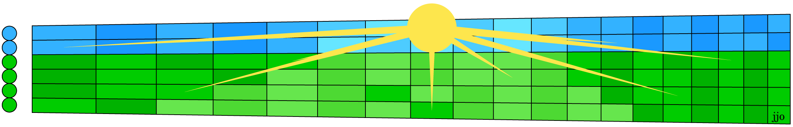

Ah, the grass is finally green, the sky is blue and the bright morning sun says it's going to be a good day! Or wait, it's no longer spring, we're past solstice so the days are getting shorter and shorter. Which is it? Well, it's both. Kind of like the exercise in this month's sightreading handout*
It's an easy first-position sightread that you will surely recognize when you play it. People usually associate it with peace and tranquility, the bright start to a good day where all will go well. It was written by a Norwegian composer as incidental music to set the mood for a morning scene in Henrik Ibsen's play Peer Gynt, so most people imagine sunrise over the cool forests and fjords of Scandinavia. But in the actual play, that scene shows Peer Gynt waking up to find himself abandoned in the Moroccan desert as the sun rises over the Sahara.
Nevertheless the piece is a pleasant sightread with simple pentatonic arpeggios that exude peacefulness. Those arpeggios also trace out a simple chord progression that builds in interest and intensity as the sun finally rises. For those more interested in chord melody than in sightreading, the chords have been listed for your enjoyment. Their sound and the familiar melody will bring you peace. Enjoy it while it lasts.
P.S. This fretboard graphic continues the tradition of emphasizing C notes: the sun is the high C on the first string and its rays point to the other eight C's on the fretboard, though some rays overlap. Can you "C" which ones?